حافة تشكّل المجرات III: آثار المادة المظلمة الدافئة في توابع درب التبانة والأقزام الحقلية
الملخص
في هذا البحث الثالث من السلسلة، نبحث آثار المادة المظلمة الدافئة ذات كتلة جسيم قدرها في أصغر المجرات في كوننا. نقدّم عينة من 21 محاكاة كونية هيدروديناميكية لمجرات قزمة و20 محاكاة لتفاعل المجرات التابعة مع المجرات المضيفة، أجريناها في كلٍّ من سيناريو المادة المظلمة الباردة (CDM) وسيناريو المادة المظلمة الدافئة (WDM). في محاكيات WDM نلاحظ كتلة حرجة أعلى لبدء تكوّن النجوم. يكون نمو البنى متأخرًا في WDM؛ ونتيجة لذلك تمتلك هالات WDM، في المتوسط، مجموعة نجمية أصغر عمرًا بنحو اثنين Gyr من نظيراتها في CDM. ومع ذلك، ورغم هذا التأخر في تكوّن النجوم، تستطيع مجرات CDM وWDM على السواء إعادة إنتاج علاقات القياس المرصودة لتشتت السرعات والكتلة النجمية والحجم والفلزية عند . تكون هالات توابع WDM داخل مضيف بكتلة درب التبانة أكثر عرضة للتجريد المدي بسبب تراكيزها الأدنى، غير أن مجراتها قد تبقى مدة أطول حتى من نظيراتها في CDM إذا كانت تعيش في هالة مادة مظلمة ذات ميل مركزي أشد انحدارًا. واتساقًا مع دراستنا السابقة لتوابع CDM، نلاحظ ازدياد انحدار ميل كثافة المادة المظلمة المركزية في توابع WDM بفعل التجريد. ويمكن مستقبلًا استخدام الفرق في متوسط العمر النجمي للمجرات التابعة بين CDM وWDM للتمييز بين هذين النموذجين.
keywords:
علم الكونيات: النظرية – المادة المظلمة – المجرات: التشكل – المجرات: الحركيات والديناميكيات – الطرق: العددية1 المقدمة
في النموذج القياسي الحالي لتطور كوننا وتشكّل البنى فيه، توصف الجاذبية بالنسبية العامة مع ثابت كوني (Riess et al., 1998; Perlmutter et al., 1999). ويهيمن على تشكّل البنى (على المقاييس الكبيرة وفي الأزمنة المبكرة) نوع المادة المظلمة الباردة (CDM, Peebles, 1984) الذي لا يخضع، بخلاف المادة الباريونية، للضغط ولا لقوى أخرى سوى الجاذبية. وفي مثل هذا النموذج يحدث تشكّل البنى بصورة هرمية، إذ تتكون أصغر الهالات أولًا ثم تندمج لتشكّل بنى أعظم كتلة (White & Rees, 1978; Blumenthal et al., 1984). وبعد انفصال الغاز عن حقل الإشعاع، يمكنه السقوط على هالات المادة المظلمة ثم يبرد في نهاية المطاف ويكوّن النجوم ثم المجرات. وعلى الرغم من نجاحه الكبير في التنبؤ بالبنية المرصودة للكون على المقاييس الكبيرة (Mpc)، ما تزال هناك أسئلة مفتوحة تتعلق بالقدرة على إعادة إنتاج الرصد على مقاييس المجرات القزمة وتوابع درب التبانة (انظر Flores & Primack, 1994; Moore, 1994; Klypin et al., 1999; Moore et al., 1999; Boylan-Kolchin et al., 2011; Oh et al., 2015).
وللإجابة عن هذه الأسئلة وتسليط الضوء على عملية تشكّل المجرات عند حافة طيف كتلها، قدمنا في أول بحثين من هذه السلسلة (Macciò et al., 2017; Frings et al., 2017) (وسنشير إليهما من الآن فصاعدًا باسم paperI وpaperII) سلسلة من المحاكيات الهيدروديناميكية فائقة الدقة (دقة وتليين ) في هالات مادة مظلمة ذات كتل (paperI). ثم درسنا أثر المضايقة المدية من جسم مركزي محتمل شبيه بدرب التبانة في paperII.
أظهرت نتائجنا أن المجرات القزمة والتابعة المحاكاة في كون CDM يمكنها أن تعيد بنجاح إنتاج علاقات القياس المرصودة لأقزام وتوابع المجموعة المحلية. وأظهرنا أيضًا أن التفاعلات المدية والتجريد عناصر مهمة جدًا لإعادة إنتاج التشتت في هذه العلاقات ولتفسير بعض الأجرام الغريبة المرصودة (مثل Crater2، Caldwell et al., 2017). ونظرًا إلى نجاح محاكيات CDM، فمن المثير للاهتمام طرح سؤال ما إذا كانت أنواع أخرى من المادة المظلمة ستترك بصمات مختلفة على هذه الأجرام ذات الكتلة المنخفضة جدًا، ومن ثم ما إذا كان بوسعنا استخدام أرصاد التوابع المجرية لمعرفة المزيد عن طبيعة المادة المظلمة.
تُعد المادة المظلمة الدافئة (WDM) بديلًا شائعًا لـ CDM؛ ففي هذا النموذج تظل للجسيمات سرعة حرارية غير مهملة عند الانفصال، ثم يمكنها الانتشار الحر خارج اضطرابات الكثافة الصغيرة. ويخلق هذا الانتشار الحر حدًا قاطعًا في طيف القدرة، ومن ثم يثبط تشكّل البنى على المقاييس الصغيرة (Bode et al., 2001).
طُرحت نماذج WDM أول مرة للتخفيف من مشكلات CDM المذكورة آنفًا على المقاييس الصغيرة (Colín et al., 2000; Lovell et al., 2012). ومع أنه اتضح أن الفيزياء الباريونية توفر حلًا طبيعيًا لأزمة المقاييس الصغيرة (Macciò et al., 2010; Sawala et al., 2014; Bullock & Boylan-Kolchin, 2017; Buck et al., 2018a)، فإن WDM تظل بديلًا صالحًا لـ CDM، وربما تدعمها الادعاءات الحديثة برصد خط في أطياف الأشعة السينية لعناقيد المجرات والمجرات المفردة، وهو خط يمكن تفسيره بأنه صادر عن اضمحلال جسيم مادة مظلمة كتلته keV (انظر Boyarsky et al., 2018, لمراجعة حديثة).
لقد ثبت بالفعل أن إدراج آثار الفيزياء الباريونية في نمذجة WDM عنصر أساسي لفهم درجة حرارة المادة المظلمة الفعلية فهمًا أفضل. أظهر Macciò & Fontanot (2010)، باستخدام محاكيات N-body مقترنة بنموذج شبه تحليلي لتشكّل المجرات، أن دالة لمعان توابع درب التبانة تضع حدًا أدنى قدره 2 keV لكتلة مرشح حراري من WDM (انظر أيضًا Kang et al., 2013). درس Governato et al. (2015) أثر WDM بكتلة في تطور هالة واحدة حوكيت بنماذج متعددة لتكوّن النجوم والتغذية الراجعة. ووجدوا أن تكوّن النجوم ينخفض ويتأخر معًا بمقدار 1-2 Gyr مقارنة بتشغيلات CDM، وهي نتائج أكدها حديثًا Chau et al. (2017) باستخدام نموذج تحليلي بسيط لربط تاريخ تكوّن النجوم في هالة مادة مظلمة بزمن تشكلها، كما أكدها Bozek et al. (2018) باستخدام محاكيات كونية هيدروديناميكية لمادة مظلمة من نيوترينوات عقيمة رنينية.
أخيرًا، جرى البحث عن الوجود المحتمل لمرشح دافئ في ميادين أخرى تتجاوز المجرات الخافتة. ولذكر أمثلة قليلة، استخدم Bremer et al. (2018) إثراء الوسط بين المجرات، ودرس Wang et al. (2017) وMenci et al. (2018) الخواص العامة للمجرات في CDM وWDM باستخدام نماذج شبه تحليلية، ونظر Dayal et al. (2017) في ثقوب سوداء عالية الانزياح الأحمر ناتجة عن انهيار مباشر في WDM، واستكشف Bose et al. (2016) وVillanueva-Domingo et al. (2018) آثار WDM في إعادة التأين الكونية، في حين قدم Lovell et al. (2017) سلسلة من المحاكيات الهيدروديناميكية لمادة مظلمة من نيوترينوات عقيمة في سياق المجموعة المحلية.
في هذا البحث نوسّع ونستكمل النتائج السابقة المتعلقة بأثر WDM في خواص أخفت المجرات في الكون. نركز اهتمامنا على مرشح حراري من WDM كتلته ؛ فهذا المرشح يمتلك أدنى كتلة ممكنة متوافقة مع الحدود التي تفرضها غابة لايمان-ألفا (Viel et al., 2013; Iršič et al., 2017; Garzilli et al., 2018). وقد حاكينا عينة من 21 هالة في كل من WDM وCDM لدراسة المجرات القزمة المعزولة في WDM. ثم استُخدمت أربع من هذه الهالات كشروط ابتدائية لدراسة تفاعلات التوابع مع المضيف.
ينظم هذا البحث على النحو الآتي: في القسم 2 نعرض الشفرة وعينة المحاكيات الكونية الهيدروديناميكية. وفي القسم 3 نقدم مقارنة تطور المجرات القزمة في CDM وWDM بدراسة علاقات القياس المرصودة والأعمار النجمية وبنية المادة المظلمة. وندرس كذلك آثار التجريد المدي لتوابع درب التبانة في CDM وWDM. وأخيرًا، في القسم 4 نلخص نتائجنا ونناقشها.
2 المحاكيات
| Name | |||||||
|---|---|---|---|---|---|---|---|
| CDM | WDM | CDM | WDM | CDM | WDM | ||
| g8.94e8 | 8.19 | 2.31 | 0 | 0 | 0 | 0 | 2.38 |
| g1.89e9 | 1.42 | 1.07 | 0 | 0 | 0 | 0 | 2.38 |
| g3.54e9 | 2.85 | 2.51 | 3.89 | 0 | 4704 | 0 | 2.38 |
| g3.67e9 | 3.12 | 2.56 | 9.20 | 0 | 1110 | 0 | 2.38 |
| g4.36e9 | 9.71 | 5.43 | 3.30 | 0 | 38 | 0 | 8.03 |
| g4.48e9* | 3.63 | 3.13 | 6.51 | 9.69 | 7883 | 1172 | 2.38 |
| g4.99e9 | 5.70 | 4.29 | 3.76 | 0 | 538 | 0 | 1.90 |
| g5.22e9 | 6.30 | 3.48 | 1.17 | 0 | 171 | 0 | 1.90 |
| g5.59e9 | 6.43 | 6.28 | 1.73 | 7.00 | 2509 | 1012 | 1.90 |
| g6.31e9 | 5.13 | 4.48 | 3.71 | 2.48 | 4457 | 3 | 2.38 |
| g7.05e9 | 1.05 | 8.68 | 2.26 | 2.01 | 3230 | 2854 | 1.90 |
| g8.63e9 | 5.59 | 4.34 | 5.90 | 0 | 2022 | 0 | 8.03 |
| g9.91e9* | 7.42 | 7.25 | 1.50 | 8.96 | 5238 | 3097 | 8.03 |
| g1.17e10* | 8.60 | 9.07 | 3.34 | 2.90 | 11613 | 10109 | 8.03 |
| g1.18e10 | 1.09 | 1.44 | 3.37 | 8.73 | 4887 | 12551 | 1.90 |
| g1.23e10* | 9.06 | 1.32 | 1.58 | 2.36 | 2278 | 3405 | 1.90 |
| g1.44e10 | 1.69 | 1.22 | 6.64 | 3.24 | 9562 | 4664 | 1.90 |
| g1.47e10 | 1.52 | 1.03 | 8.92 | 5.15 | 12910 | 7476 | 1.90 |
| g1.50e10 | 1.40 | 1.22 | 3.32 | 2.31 | 4840 | 3222 | 1.90 |
| g1.95e10 | 1.37 | 1.20 | 3.79 | 2.33 | 5429 | 3327 | 1.90 |
| g2.94e10 | 3.22 | 3.05 | 5.63 | 4.75 | 81608 | 68629 | 1.90 |
| Name | [Fe/H] | [Fe/H] | ||||
|---|---|---|---|---|---|---|
| CDM | WDM | CDM | WDM | CDM | WDM | |
| g8.94e8 | - | - | - | - | - | - |
| g1.89e9 | - | - | - | - | - | - |
| g3.54e9 | 0.361 | - | 12.4 | - | -2.286 | - |
| g3.67e9 | 0.280 | - | 8.39 | - | -2.496 | - |
| g4.36e09 | 0.171 | - | 6.378 | - | -3.194 | - |
| g4.48e9* | 0.225 | 0.163 | 9.469 | 6.172 | -1.947 | -2.485 |
| g4.99e09 | 0.239 | - | 7.309 | - | -1.886 | - |
| g5.22e09 | 0.170 | - | 6.499 | - | -2.434 | - |
| g5.59e09 | 0.430 | 0.264 | 11.706 | 7.619 | -1.787 | -1.898 |
| g6.31e9 | 0.159 | - | 8.536 | - | -1.978 | - |
| g7.05e09 | 0.555 | 0.729 | 10.036 | 10.861 | -1.721 | -1.862 |
| g8.63e9 | 0.258 | - | 8.783 | - | -1.932 | - |
| g9.91e9* | 0.364 | 0.263 | 9.099 | 8.540 | -1.752 | -1.797 |
| g1.17e10* | 0.385 | 0.378 | 11.114 | 10.341 | -1.660 | -1.735 |
| g1.18e10 | 0.526 | 0.841 | 12.974 | 14.593 | -1.671 | -1.659 |
| g1.23e10* | 0.498 | 0.475 | 9.968 | 11.748 | -1.727 | -1.777 |
| g1.44e10 | 1.486 | 0.669 | 14.048 | 11.796 | -1.705 | -1.741 |
| g1.47e10 | 0.801 | 0.986 | 13.356 | 14.361 | -1.6156 | -1.748 |
| g1.50e10 | 0.869 | 0.552 | 14.441 | 10.463 | -1.767 | -1.916 |
| g1.95e10 | 0.462 | 0.403 | 12.561 | 10.316 | -1.670 | -1.771 |
| g2.94e10 | 1.477 | 1.763 | 20.911 | 20.485 | -1.423 | -1.463 |
2.1 المحاكيات الكونية
أجرينا ما مجموعه 42 محاكاة تكبيرية هيدروديناميكية لـ 21 هالة في كل من سيناريو CDM وسيناريو WDM باستخدام شفرة هيدروديناميك الجسيمات الملساء gasoline2 (Wadsley et al., 2017). وبالمقارنة مع البحثين السابقين (Macciò et al., 2017; Frings et al., 2017)، حدّثنا المعلمات الكونية وفقًا لـ Ade et al. (2014): معامل هابل = 67.1 Mpc-1، وكثافة المادة ، وكثافة الطاقة المظلمة ، وكثافة الباريونات ، ومعايرة طيف القدرة ، وميل طيف القدرة الابتدائي .
اعتُمد إعداد الشفرة من مشروع Numerical Investigation of a Hundred Astrophysical Objects (NIHAO) (Wang et al., 2015). وتتضمن الشفرة تبريد الغاز المعدني، والإثراء الكيميائي، وتكوّن النجوم، والتغذية الراجعة النجمية. وبالنسبة إلى عتبة الكثافة لتكوّن النجوم، اخترنا وفقًا لكتلة 50 جسيمًا غازيًا (نواة التنعيم) في حجم يمتد بطول التليين (لمزيد من التفاصيل انظر Wang et al., 2015). فإذا بلغ الغاز أمكنه تكوين نجوم بكفاءة قدرها . ويتضمن تبريد الغاز تبريد الخطوط المعدنية كما وصفه Shen et al. (2010)، وتبريد كومبتون، والتأين الضوئي، والتسخين بفعل الخلفية فوق البنفسجية تبعًا لـ Haardt & Madau (2012). تُنفّذ التغذية الراجعة النجمية كتغذية راجعة لموجة انفجار SN كما وصفها Stinson et al. (2006)، وندرج أيضًا أثر الإشعاع الصادر من النجوم الضخمة (التغذية الراجعة النجمية المبكرة) تبعًا لـ Stinson et al. (2013).
اختيرت الهالات ابتداءً بوصفها فرط كثافات معزولة في محاكاتين كونيتين حجميتين للمادة المظلمة وحدها. وكان الصندوق الأول، بحجم و جسيم، قد استُخدم بالفعل في مشروع NIHAO (Wang et al., 2015)، وتشغيلات CDM للهالات المختارة من هذا الصندوق هي مجرات من عينة NIHAO. وإضافة إلى ذلك، شغّلنا صندوقًا بحجم و جسيمًا اخترنا منه هالات أخرى لزيادة حجم عينتنا. كما شغّلنا كلا الحجمين في سيناريو WDM. ولوصف خمود المقاييس الصغيرة الناتج عن سرعات الانسياب، ننطلق من طيف قدرة WDM هو يرتبط بطيف قدرة CDM، ، عبر دالة الانتقال ، حيث إن هو عدد الموجة. نستخدم صيغة ملاءمة
| (1) |
اقترحها Bode et al. (2001) لحساب دالة الانتقال. وتُضبط المعلمات على و
| (2) |
تبعًا لـ Viel et al. (2005). ومن حيث المبدأ، ينبغي أيضًا إضافة مساهمة حرارية إلى سرعات جسيمات WDM (مثلًا Bode et al., 2001). غير أنه نظرًا إلى اختيارنا لكتلة WDM (3 keV) ودقتنا، فإن هذه المساهمة ستكون مهملة مقارنة بالسرعة الآتية من الجهد الثقالي (Macciò et al., 2012a)، ولذلك قررنا عدم إدراجها. انطلاقًا من المحاكيات الكونية الحجمية، نجري محاكيات تكبيرية للأجرام المختارة (نفسها)11 1 حُددت نظائر CDM لهالات WDM باستخدام معرّفات جسيمات المادة المظلمة في التشغيل منخفض الدقة؛ وفي المتوسط طابَق أكثر من 50 في المئة من المعرّفات. في كل من سيناريو CDM وسيناريو WDM. وبما أن كتلة النمط النصفي (مثلًا Leo et al., 2017) لبقايا حرارية كتلتها 3 keV من رتبة ، فإننا نتوقع أن تتشكل جميع الهالات المختارة في كلا النموذجين الكونيين.
بالنسبة إلى أجرام NIHAO نحتفظ بالدقة المعطاة في محاكيات NIHAO، أما الأجرام المختارة حديثًا فنختار عامل التقريب بحيث يكون لدينا ما لا يقل عن جسيم مادة مظلمة داخل نصف القطر الفريالي عند الانزياح الأحمر . وتُعرض كتلة جسيم المادة المظلمة في منطقة التكبير، وكذلك الكتلة الفريالية والكتلة النجمية وعدد الجسيمات النجمية (داخل 10 في المئة من نصف القطر الفريالي) لكل محاكاة في الجدول 1. لجسيمات الغاز كتلة ابتدائية قدرها ، بينما تبدأ الجسيمات النجمية بكتل ابتدائية . ويعرض الجدول 2 الخواص البنيوية (أنصاف أقطار نصف الكتلة ثنائية الأبعاد (2D)، وتشتت السرعات النجمية، والفلزية) لجميع المجرات في تشغيلات WDM وCDM.
2.2 الشروط الابتدائية للتوابع
من مخرجات للمحاكيات الكونية للمجرات g1.23e10، وg1.17e10، وg9.91e9، وg4.48e9، نتابع كما هو موصوف في paperII (Frings et al., 2017) بقص المجرات من محيطها وتطويرها في جهد تحليلي لهالة وقرص شبيهين بدرب التبانة، مع مخطط لإزالة الغاز يحاكي آثار ضغط السحب. وبالنسبة إلى هالة المادة المظلمة نستخدم جهد Navarro, Frenk & White (NFW) (Navarro et al., 1996) بكتلة ، ومعامل تركيز (Dutton & Macciò, 2014)، ونصف قطر فريالي . ويُمثَّل الجسم النجمي بجهد Miyamoto & Nagai (Miyamoto & Nagai, 1975) بكتلة قرص ، وطول مقياس قرصي وارتفاع . ثم يُطوَّر كل تابع على المدارات الخمسة المدرجة في الجدول 3. تبدأ جميع المسارات عند نصف القطر الفريالي للهالة المضيفة في مستوى القرص، وسيخضع التابع لعبورين للحضيض على جميع المدارات حتى . كما تُطوَّر كل مجرة مقتطعة في عزلة (بلا جهد وبلا إزالة للغاز) من إلى ؛ ونشير إلى هذه التشغيلات باسم المجرات “المعزولة”.
| Name | ||||
|---|---|---|---|---|
| orbitI | 1.5 | 25.52 | 0 | |
| orbitII | 1.5 | 25.46 | 90 | |
| orbitIII | 1.5 | 25.26 | 45 | |
| orbitIV | 1.4 | 7.94 | 90 | |
| orbitV | 1.4 | 7.2 | 0 |
3 النتائج
3.1 آثار WDM في المجرات الحقلية
نقدّم أولًا المقارنة بين محاكيات CDM وWDM لتشغيلاتنا الكونية عند (لاحظ أن هذا يختلف عن paperI، حيث حُللت المجرات الحقلية عند ).
3.1.1 كتل الهالات
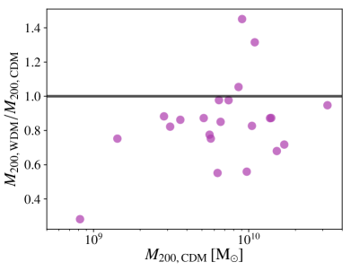
يتأخر تشكّل البنى في WDM بالنسبة إلى CDM، ونسعى إلى قياس ذلك كمّيًا بالنظر أولًا إلى كتل الهالات. في هذا العمل كله تُعطى الكتل وأنصاف الأقطار الفريالية دائمًا بالنسبة إلى (حيث إن هي الكثافة الحرجة). في الشكل 1 تُرسم نسبة الكتل الفريالية في تشغيلي WDM وCDM مقابل الكتلة الفريالية في CDM. ويشير الخط الأسود إلى نسبة مقدارها واحد، بينما تمثل النقاط البنفسجية بيانات المحاكاة. ويمكننا أن نرى أنه في سيناريو WDM تكون الهالات أقل كتلة باستمرار، ولا سيما للكتل دون ، اتساقًا مع توقعات النظرية الخطية والدراسات السابقة (مثلًا Bozek et al., 2016). أما عند الكتل الأعلى، فتكون قلة من هالات WDM المحاكاة أكثر كتلة من نظائرها في CDM؛ ويرجع ذلك جزئيًا إلى التشتت الذي تدخله عشوائية أشجار الاندماج. وللنظر في هذه المسألة بالتفصيل، نبحث تواريخ تراكم الكتلة لإحدى الهالات التي تنتهي بكتلة فريالية أكبر في WDM مقارنة بـ CDM. في اللوحة العلوية من الشكل 2 نعرض تطور الكتلة الفريالية للهالة g1.23e10. الخط الأسود هو الكتلة الحرجة من Okamoto et al. (2008) التي تشير إلى الكتلة التي تفقد عندها الهالات نصف كتلتها الباريونية بفعل الخلفية فوق البنفسجية. ويُعرض معدل تكوّن النجوم في اللوحة السفلية. في سيناريو CDM يحدث اندماج عند أدى إلى حدث كثيف لتكوّن النجوم عند (انظر القمة في اللوحة السفلية) مسهمًا في جزء كبير من الكتلة النجمية الكلية. وبعد ذلك تتطور الهالة قريبة جدًا من نموذج Okamoto مع تكوّن نجمي ضئيل. أما في WDM، فيحدث ذلك الاندماج في وقت لاحق ()، وتتطور الهالة فوق كتلة Okamoto الحرجة بكثير مع زيادة مستمرة في تكوّن النجوم كما هو مبين في اللوحة السفلية. إن حدوث مثل هذه الفروق في تواريخ تراكم الكتلة بين نظائر CDM وWDM يبيّن أهمية امتلاك عينة كبيرة من المجرات المحاكاة كي لا ننخدع بالقيم الشاذة المحتملة.
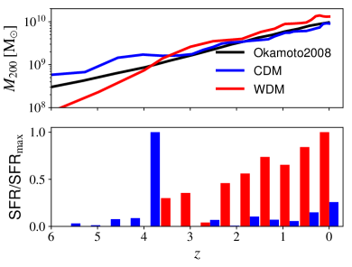
3.1.2 تكوّن النجوم والكسر المضيء
في الشكل 3 نعرض الكتلة النجمية للمجرات (أي النجوم داخل في المئة من نصف القطر الفريالي) بدلالة الكتلة الفريالية. والخط الرمادي المتقطع في الخلفية هو الاستقراء إلى الكتل المنخفضة لمطابقة الوفرة من Moster et al. (2013) والتشتت المرتبط حول العلاقة. وتدل الدوائر الزرقاء والحمراء على الهالات التي تكوّن مجرات في مراكزها في CDM وWDM، على التوالي، وتدل المثلثات على الهالات التي تبقى مظلمة حتى الانزياح الأحمر الصفري.
نرى أنه فوق مقياس كتلة قدره في كلا سيناريوهي المادة المظلمة ستكوّن الهالات نجومًا دائمًا، يلي ذلك مجال نجد فيه هالات مضيئة ومظلمة معًا، وأخيرًا كتلة دنيا مقدارها لا يمكن دونها أن تتكوّن النجوم. وعلى الرغم من أن كتل الهالات من تشغيلات CDM وWDM تختلف (كما أشرنا في القسم 3.1.1)، فإن علاقة مطابقة الوفرة تظل متحققة للهالات المكوِّنة للنجوم في WDM. وبعبارة أخرى، قد تؤثر WDM في القيمة النهائية لكتلة الهالة، لكنها لا تؤثر في كفاءة تكوّن النجوم.
ومع ذلك يبدو أن الكتلة الحرجة للهالات اللازمة لتكوّن النجوم تنتقل في هالات WDM إلى كتل أعلى. ولتوضيح هذا الأثر نعرض أيضًا الكسر المضيء على محور الثاني في هيئة خطوط صلبة. نقدّر الكسر المضيء بتنعيم أعداد المجرات المضيئة بنواة غاوسية ذات عرض ثابت في الفضاء اللوغاريتمي. ويقترح الخطان أن الانتقال من الهالات المظلمة إلى الهالات المضيئة أقل حدة في WDM منه في CDM. ففي WDM يوجد مجال كتل واسع تتعايش فيه الهالات المظلمة والمضيئة22 2 أظهر فحص بصري لهالات WDM المظلمة أن هذه الهالات مكتملة التشكل في مكوّن المادة المظلمة لديها، لكنها فشلت في مراكمة أي غاز بسبب الخلفية فوق البنفسجية.. وفي أعمال أخرى (Sawala et al., 2016; Buck et al., 2018a) لوحظت منطقة انتقال أوسع أيضًا في CDM، وإن كان ذلك عند دقة أدنى. وتلزم عينة أكبر من الهالات لتحديد قوة هذا الأثر كمّيًا على نحو أفضل.
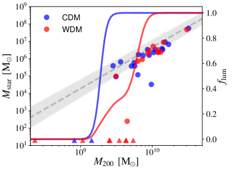
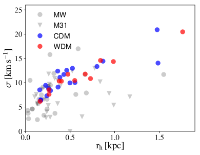
3.1.3 علاقات القياس
لمقارنة محاكياتنا بالبيانات الرصدية، ندرس علاقتي قياس قابلتين للرصد: علاقة تشتت السرعات بالحجم، وعلاقة الفلزية بالكتلة النجمية33 3 في هذا القسم والقسم التالي، حللنا جميع المحاكيات المحتوية على نجوم باستثناء تشغيل WDM لـ g6.31e9. حذفنا هذه المحاكاة من العينة لأن هذه المجرة تحتوي على ثلاثة جسيمات نجمية فقط عند .. وتُلخّص قيم هذه المرصودات لجميع المجرات المحاكاة في الجدول 2. في الشكل 4 نعرض تشتت السرعات أحادي البعد (المتوسط على و و) وأنصاف أقطار نصف الكتلة المسقطة (المتوسطة بالطريقة نفسها). أُخذت البيانات من تجميع أعده M.Collins (اتصال خاص)، يتضمن بيانات من Walker et al. (2009) لدرب التبانة، ومن Tollerud et al. (2012); Tollerud et al. (2013); Ho et al. (2012); Collins et al. (2013); Martin et al. (2014) لتوابع M31. وكما أشرنا بالفعل في paperI، فإن محاكيات المجرات الحقلية تميل، بسبب غياب الآثار المدية، إلى الوقوع في النصف العلوي من المخروط الذي تمتد عبره البيانات الرصدية للتوابع. غير أن مجرات WDM وCDM تشغلان الحيز نفسه في فضاء المعلمات، ولا يمكن فصل المجموعتين.
وينطبق الأمر نفسه على علاقة الفلزية بالكتلة النجمية المبينة في الشكل 5. وترميز الألوان هو نفسه كما سبق، وتُعرض البيانات الرصدية لتوابع درب التبانة وM31 من Kirby et al. (2014) في هيئة نقاط ومثلثات رمادية، على التوالي. ومرة أخرى تفي محاكيات CDM وكذلك محاكيات WDM بالعلاقة نزولًا إلى الكتل المتوسطة. أما عند الكتل النجمية الأدنى، فإن تكوّن النجوم في محاكياتنا يحدث غالبًا في اندفاع قصير واحد، كما أن الدقة الزمنية لإعادة تدوير الغاز ضعيفة جدًا فلا تستطيع حلّ إثراء الغاز بالمعادن، مما يؤدي إلى نقص المعادن في المجرات ذات الكتل النجمية دون (لمزيد من التفاصيل انظر paperI وpaperII).
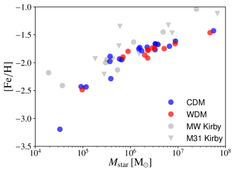
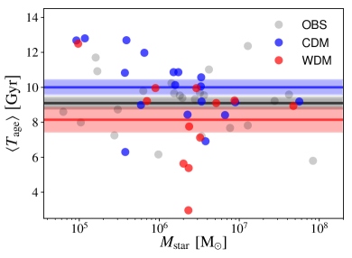
3.1.4 الأعمار النجمية
بما أن تشكّل البنى يتأخر في WDM (Bode et al., 2001)، فقد يترك ذلك بصمة في الأعمار النجمية لمجرات WDM (Governato et al., 2015; Lovell et al., 2017). في الشكل 6 نعرض العمر النجمي المتوسط بالكتلة للمجرات بدلالة الكتلة النجمية. كما نعرض المتوسط (خط صلب) وخطأه (منطقة مظللة) لكل من WDM (أحمر) وCDM (أزرق) والبيانات الرصدية (رمادي) المأخوذة من Weisz et al. (2014).
لمجرات CDM متوسط عمر نجمي قدره Gyr، وهو أكبر قليلًا من القيمة المرصودة . ومن ناحية أخرى، فإن المقارنة المباشرة بين المحاكيات والأرصاد صعبة إلى حد ما لأنه بينما يُستخرج العمر النجمي مباشرة من المحاكيات، فإنه يُستدل عليه فقط من الأرصاد، وتدخل عدة انحيازات ومنهجيات في الاشتقاق الرصدي لخواص المجرات (انظر مثلًا Guidi et al., 2015). والأفيد بدلًا من ذلك النظر إلى الفرق بين CDM وWDM عند نموذج ثابت لتشكّل المجرات. تبدو مجرات WDM وكأنها تتشكل في أزمنة متأخرة مقارنة بـ CDM (انظر أيضًا Governato et al., 2015; Lovell et al., 2017)، بمتوسط عمر قدره ، ويبدو أنها تجد صعوبة في إعادة إنتاج أرصاد المجرات التي كانت قائمة مبكرًا جدًا عند . في محاكيات CDM تتكون النجوم في تلك المجرات العتيقة جدًا عادة قبل ظهور الخلفية المعيدة للتأين، لكنها تُخمد أثناء إعادة التأين، مما يؤدي إلى متوسط عمر نجمي كبير جدًا. أما تأخر تشكّل البنى في WDM فيجعل من الصعب جدًا على أي من هذه الأقزام منخفضة الكتلة أن تكوّن أي نجوم قبل إعادة التأين، ومن ثم يقلل بقوة عدد المجرات العتيقة جدًا. وإضافة إلى ذلك تتنبأ WDM بمجرات فتية جدًا حدث معظم تكوّن نجومها قبل فقط. وقد يُستخدم هذا الفرق المنهجي في متوسط الأعمار النجمية للتوابع والمجرات القزمة مستقبلًا للتمييز على نحو أفضل بين CDM ونموذج WDM بكتلة لا تتجاوز keV.
3.1.5 بنية الهالات
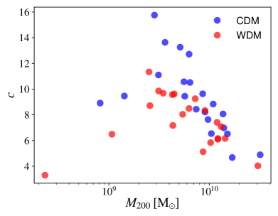
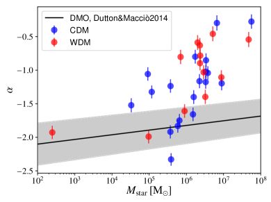
أخيرًا نريد بحث البنية الداخلية للمادة المظلمة في الهالات. أما التراكيز المعرّفة بـ فنعرضها في الشكل 7، حيث إن هو نصف قطر المقياس لملف NFW (Navarro et al., 1996) الملائم لمكوّن المادة المظلمة في الهالات. واتساقًا مع الدراسات السابقة لتشكّل بنية WDM في محاكيات N-body (Macciò et al., 2012b; Schneider et al., 2012; Lovell et al., 2014) تقع تراكيز الهالات في محاكيات WDM دون نظيراتها في CDM.
وثمة كمية أخرى بالغة الأهمية للنظر فيها، هي الميل اللوغاريتمي الداخلي لكثافة المادة المظلمة . وتشير قيمة إلى ملف ذي لب، بينما تمثل الميل التقاربي المتوقع لملف NFW (Navarro et al., 1996). في الشكل 8 نعرض الميل اللوغاريتمي الداخلي لكثافة المادة المظلمة، المحسوب بين 1 و2 في المئة من نصف القطر الفريالي (انظر paperII) بدلالة الكتلة النجمية لتشغيلات CDM (أزرق) وتشغيلات WDM (أحمر). ويعرض الخط الأسود التوقعات النظرية لملف Einasto المستحصلة باستقراء نتائج محاكيات Nbody نقية من Dutton & Macciò (2014) إلى الكتل المنخفضة. نستخدم تنبؤات مطابقة الوفرة من Moster et al. (2013) للتحويل بين كتلة الهالة والكتلة النجمية، وتمثل المنطقة المظللة التباين المتوقع في بافتراض تشتت قدره 0.3 dex في قيمة التركيز عند كتلة هالة ثابتة (Dutton & Macciò, 2014). وكما أُشير سابقًا في أعمال سابقة (Pontzen & Governato, 2012; Macciò et al., 2012b; Di Cintio et al., 2014; Madau et al., 2014; Chan et al., 2015; Dutton et al., 2016; Read et al., 2016; Tollet et al., 2016; Macciò et al., 2017) نرى اتجاه الكتل النجمية الأعلى إلى إنتاج ملفات ذات لب متزايد في مجال الكتل هذا. ومن ناحية أخرى، تميل المجرات ذات التكوّن النجمي الضئيل إلى العيش في ملفات مادة مظلمة شديدة الانحدار. وفي هذه الحالة أيضًا لا نرى أي فرق خاص بين محاكيات CDM وWDM، مما يؤكد أن المحرك الرئيسي لتحول الحدبة إلى لب هو كفاءة تكوّن النجوم (Dutton et al., 2016) وأن التركيز الأدنى لهالات WDM يؤدي دورًا طفيفًا جدًا.
3.2 آثار WDM في التجريد المدي للتوابع
3.2.1 فقدان الكتلة
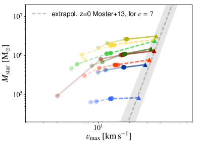
بعد أن عرفنا آثار WDM في الأقزام الحقلية، نريد أن نرى ما إذا كان هناك فرق في الطريقة التي تتطور بها المجرات إلى توابع. ولقياس فقدان الكتلة النجمية وكتلة المادة المظلمة، نعرض في الشكل 9 الكتلة النجمية عند الانزياح الأحمر داخل كرة نصف قطرها ثلاثة أنصاف أقطار نجمية لنصف الكتلة (مقاسة عند زمن السقوط) بدلالة القيمة العظمى لملف السرعة الدائرية . ويُشرح ترميز الألوان للرسوم في هذا القسم في الجدول 4. وتدل المثلثات على التشغيلات المعزولة، بينما تدل الدوائر المملوءة على التشغيلات المدارية. وقد اخترنا شفافية مختلفة لكل مدار مدرج في الجدول 3، حيث رتبنا المدارات الستة بحسب "قدرتها على التعطيل"، أي إن orbitI هو ألطف مدار، يسبب أقل الانحرافات عن التشغيل المعزول (مثلًا في فقدان الكتلة)، في حين يوفر orbitV أعنف تفاعل بين التابع والجسم المركزي، باستثناء السقوط الشعاعي الكامل. وبينما تقع جميع المجرات على علاقة Moster في العزلة، فإن نظيرات WDM تمتلك وكتلة نجمية أدنى، باستثناء g1.23e10، فهي أكثر كتلة وأكثر غنى بالنجوم. وإذا طُوّرت على مدار ألطف، فإن الكتل النجمية لا تتغير تغيرًا ملحوظًا، بينما تنخفض بالفعل على نحو كبير. أما في المدارات الأعنف فتُخفض الكتل النجمية بكفاءة. وتشبه النتائج ما ورد في paperI. غير أنه على orbitV يتعرض g9.91e9 لتجريد شديد، بينما يبدو نظيره في WDM أكثر مقاومة. وسنعود إلى تفصيل هذه النقطة في القسم 3.2.2.
نريد الآن مقارنة فقدان الكتلة في WDM وCDM مباشرة. ولذلك ننظر إلى الانخفاض الكسري في المعطى بـ . في الشكل 10 نعرض نسبة الانخفاض الكسري في WDM وCDM مع الزمن بدءًا من قبيل العبور الأول للحضيض في orbitI. وبعد اللقاء الأول نرى بالفعل اتجاهًا إلى إزالة الكتلة عند أنصاف أقطار السرعة الدائرية العظمى بكفاءة أكبر في WDM. ويستمر هذا الاتجاه بعد العبور الثاني للحضيض (لأننا نطور مجراتنا في جهد تحليلي، بلا احتكاك ديناميكي، تكون عبورات الحضيض متشابهة جدًا بين تشغيلات WDM وCDM). ويمكن تفسير هذا السلوك بالتراكيز الأدنى لهالات WDM التي عرضناها في الشكل 7.
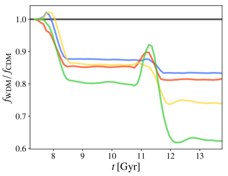
3.2.2 ميل كثافة المادة المظلمة المركزية
بما أن فقدان الكتلة وبقاء الهالة مرتبطان بالبنية المركزية للمادة المظلمة (Kazantzidis et al., 2004; Peñarrubia et al., 2010; Frings et al., 2017)، فمن المثير للاهتمام النظر إلى الميل اللوغاريتمي الداخلي لكثافة المادة المظلمة . قيّمنا بين و في المئة من نصف القطر الفريالي عند السقوط. في الشكل 11 نعرض مقابل الكتلة النجمية داخل ثلاثة أنصاف أقطار لنصف الكتلة عند السقوط. وتدل المثلثات على التشغيلات في العزلة، بينما تظهر الدوائر المملوءة orbitI. وبالنسبة إلى التشغيلات المعزولة، نرى بوضوح السلوك نفسه المتمثل في أن الملفات تصبح أكثر امتلاكًا للب مع ارتفاع الكتل النجمية. ونتيجة لذلك تبدو ملفات كثافة مجرات WDM أشد انحدارًا قليلًا ما دامت تكوّن نجومًا أقل.
غير أنه بالنسبة إلى g1.23e10، وهو أكثر كتلة ويكوّن نجومًا أكثر في WDM، ننتهي بملف أقل انحدارًا. ويظهر g9.91e9 فرقًا لافتًا في بين WDM وCDM بقيمة حول و. وهذا يجعل المنطقة المركزية من g9.91e9 أكثر قابلية بكثير للتجريد في حالة CDM، ويؤدي أيضًا إلى الفرق الهائل في فقدان الكتلة على orbitV (انظر الشكل 9). ومع أن إزالة الكتلة أسهل في WDM (انظر الشكل 10)، فإن قابلية المنطقة المركزية للبقاء واستقرارها، ولا سيما النجوم، تظل مرتبطة بميل كثافة المادة المظلمة الذي يكون عادة أشد انحدارًا في WDM بسبب انخفاض تكوّن النجوم. وقد توحي هذه النتيجة بأن هالات WDM قد تكون أكثر صمودًا من نظيراتها في CDM عند أدنى مقياس كتلي. وستكون هناك حاجة إلى عينة أكبر ومحاكيات كونية كاملة لمعالجة هذه النقطة معالجة وافية.
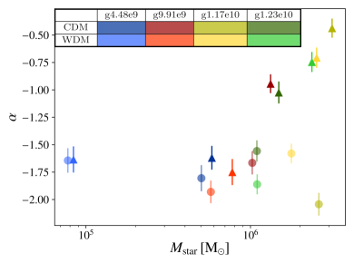
4 المناقشة والاستنتاجات
ما تزال المادة المظلمة الدافئة ذات كتلة جسيم فوق توفر بديلًا صالحًا لسيناريو المادة المظلمة الباردة القياسي. وقد أظهرنا في البحثين السابقين من هذه السلسلة (Macciò et al., 2017; Frings et al., 2017) أن نتائج محاكياتنا للمجرات الحقلية والمجرات التابعة لدرب التبانة في CDM متسقة مع البيانات الرصدية الحالية. في هذا العمل بحثنا ما إذا كانت الأرصاد تقيّد المادة المظلمة بأن تكون باردة أو تسمح بمادة مظلمة دافئة مقدارها . ولهذا عرضنا عينة من 42 محاكاة كونية لـ 21 هالة شُغّلت في كل من CDM وWDM. وكما هو متوقع من خمود طيف القدرة، تقع الكتل الفريالية لهالات WDM دون نظيراتها في CDM للكتل الأصغر من . أما الهالات عند كتل أكبر فتتأثر بدرجة أقل بكثير.
ومثل مجرات CDM، تفي مجرات WDM بعلاقة مطابقة الوفرة المستقرأة من Moster et al. (2013) حتى مع تشتت أقل قليلًا. وتكون الكتلة الحرجة اللازمة للهالات كي تستضيف مجرات مضيئة أعلى بكثير في WDM، حيث نجد عدة هالات مظلمة حتى كتلة هالة قدرها . وإضافة إلى ذلك يبدو أن WDM تتيح مجالًا أوسع من الكتل التي يجد فيها المرء هالات مظلمة ومضيئة معًا.
وجدنا أن مجرات WDM وCDM لا تُظهر سلوكًا مختلفًا في علاقتي تشتت السرعات بالحجم والفلزية بالكتلة النجمية المرصودتين. كما درسنا أزمنة التكوّن النجمي المتوسطة ووجدنا وسيلة محتملة لتمييز المجموعتين: ففي المتوسط تتشكل مجرات WDM في وقت متأخر قليلًا، مع Gyr مضت، بينما تمتلك مجرات CDM أزمنة تشكّل أبكر مع . تؤكد هذه النتيجة تنبؤات دراسات سابقة عن تشكّل المجرات القزمة في WDM (Governato et al., 2015; Chau et al., 2017)، وإن كانت الانحيازات والمنهجيات الحالية في الأعمار النجمية المشتقة رصديًا (Guidi et al., 2015) تحول دون أي مقارنة حاسمة مع البيانات الرصدية. وأخيرًا وجدنا مؤشرًا على أن WDM بالكاد يعيد إنتاج مجرات عند كتل حول ذات أعمار نجمية متوسطة قدرها ، أي إنها تشكلت في الكون المبكر قبل ظهور الخلفية فوق البنفسجية.
واتساقًا مع أعمال سابقة نجد أن هالات WDM أقل تركيزًا بصورة منهجية من نظيراتها في CDM. ومن ناحية أخرى، وعلى المقاييس الصغيرة، أي نحو بضعة في المئة من نصف القطر الفريالي، نؤكد أن ميل كثافة المادة المظلمة تحدده أساسًا كفاءة تكوّن النجوم (مثلًا Tollet et al., 2016) لا طبيعة المادة المظلمة. ونتيجة لذلك، عند الكتل النجمية المنخفضة ( وما دونها)، توحي نقاط بياناتنا القليلة بأن كفاءة تكوّن النجوم الأدنى في مجرات WDM قد تسبب ميلًا مركزيًا أشد انحدارًا قليلًا عند تلك الكتل، لكن يلزم عينة أكبر من المجرات المحاكاة لتأكيد هذا الأثر بحزم.
استخدمنا أربع مجرات من عينة WDM ونظيراتها في CDM لمحاكاة تطورها في جهد شبيه بدرب التبانة كما وُصف أعلاه. وقد شهدنا أن التراكيز الأدنى لهالات WDM تجعل الهالات أكثر حساسية لفقدان الكتلة عبر التجريد المدي. ولذلك يكون انحرافها عن علاقة الكتلة النجمية بكتلة الهالة أوضح.
غير أن بقاء المكوّن النجمي للتوابع يرتبط أيضًا بميل كثافة المادة المظلمة المركزية، الذي يمكن أن يكون أدنى بكثير في مجرات WDM ذات كفاءة تكوّن نجوم أقل. وجدنا أن أحد توابع CDM (g4.48e9) يتجرد إلى قرب نقطة التفكك، بينما يكون نظيره في WDM، ذو الملف الأكثر حدبية بكثير، أقل تأثرًا. وبما أن البقاء يعتمد على كل من التركيز والميل المركزي، فليست توابع WDM ولا توابع CDM، مسبقًا، أرجح بقاءً.
إن تحول الحدبة إلى لب الذي يحدث في محاكيات NIHAO يعود إلى عتبة الكثافة العالية المعتمدة ( part/cm3) كما دُرس حديثًا بالتفصيل في Dutton et al. (2018) (انظر أيضًا Buck et al., 2018b, لأدلة رصدية على الحاجة إلى عتبة عالية لتكوّن النجوم في المحاكيات الكونية). ولا نتوقع أن تؤثر هذه العتبة العالية (المحفزة رصديًا) لتكوّن النجوم في نتائجنا؛ ففي الواقع يتأثر معدل تكوّن النجوم تأثرًا هامشيًا جدًا بقيمة (Dutton et al., 2018)، علاوة على ذلك فإن التأخر الزمني بمقدار واحد Gyr المرئي بين تكوّن النجوم في WDM وCDM أطول بكثير من زمن التبريد عند كثافات بين ، وهي تغطي كامل طيف كثافات تكوّن النجوم المستخدمة في المحاكيات الكونية الحالية من قبل مجموعات مختلفة (انظر Dutton et al., 2018; Benitez-Llambay et al., 2018)
وباتساق جيد مع دراسات CDM المعروضة في paperI وpaperII، تظهر هالات WDM زيادة لا لبس فيها في انحدار ميل كثافة المادة المظلمة المركزية بفعل التجريد. وتتنبأ WDM بملفات كثافة حدبية دون كتلة نجمية قدرها وكذلك في التوابع المجردة. ومن ثم فإن رصدًا لا لبس فيه للب في هذه الأجرام سيجبرنا على الابتعاد عن النموذج القياسي بقدر أكبر بكثير من مجرد تغيير كتلة جسيم المادة المظلمة.
لقد بينا أن الأرصاد الحالية للتوابع والمجرات الحقلية حول درب التبانة تجد صعوبة في التمييز بوضوح بين CDM وسيناريو WDM بكتلة . ومن ناحية أخرى، قد تكون الأرصاد المستقبلية الأكثر دقة لمتوسط العمر النجمي مرصودًا واعدًا يمكن أن يساعد في تقييد طبيعة المادة المظلمة.
الشكر والتقدير
يعرب المؤلفون عن امتنانهم لـ Gauss Centre for Supercomputing e.V. (www.gauss-centre.eu) لتمويل هذا المشروع من خلال إتاحة وقت حوسبة على الحاسوب الفائق GCS Supercomputer SuperMUC في Leibniz Supercomputing Centre (www.lrz.de)، وكذلك موارد الحوسبة عالية الأداء في New York University Abu Dhabi. كما أُنجز جزء من هذا البحث على عنقود theo في Max-Planck-Institut für Astronomie وعلى عناقيد hydra في Rechenzentrum in Garching. يشكر TB وAVM التمويل من Deutsche Forschungsgemeinschaft عبر برنامج SFB 881 “The Milky Way System” (المشروعان الفرعيان A1 وA2). كما يشكر JF وAVM التمويل والدعم من الكلية العليا Astrophysics of cosmological probes of gravity التابعة لـ Landesgraduiertenakademie Baden-Württemberg. وJF وTB عضوان في International Max-Planck Research School in Heidelberg. ويشكر AO دعم German Science Foundation (DFG) بمنحة 1507011 847150-0.
References
- Ade et al. (2014) Ade P. A. R., et al., 2014, Astron. Astrophys., 571, A16
- Benitez-Llambay et al. (2018) Benitez-Llambay A., Frenk C. S., Ludlow A. D., Navarro J. F., 2018, arXiv e-prints,
- Blumenthal et al. (1984) Blumenthal G. R., Faber S. M., Primack J. R., Rees M. J., 1984, Nature, 311, 517
- Bode et al. (2001) Bode P., Ostriker J. P., Turok N., 2001, ApJ, 556, 93
- Bose et al. (2016) Bose S., Frenk C. S., Hou J., Lacey C. G., Lovell M. R., 2016, MNRAS, 463, 3848
- Boyarsky et al. (2018) Boyarsky A., Drewes M., Lasserre T., Mertens S., Ruchayskiy O., 2018, preprint, (arXiv:1807.07938)
- Boylan-Kolchin et al. (2011) Boylan-Kolchin M., Bullock J. S., Kaplinghat M., 2011, MNRAS, 415, L40
- Bozek et al. (2016) Bozek B., Boylan-Kolchin M., Horiuchi S., Garrison-Kimmel S., Abazajian K., Bullock J. S., 2016, MNRAS, 459, 1489
- Bozek et al. (2018) Bozek B., et al., 2018, preprint, (arXiv:1803.05424)
- Bremer et al. (2018) Bremer J., Dayal P., Ryan-Weber E. V., 2018, MNRAS, 477, 2154
- Buck et al. (2018b) Buck T., Dutton A. A., Macciò A. V., 2018b, arXiv e-prints,
- Buck et al. (2018a) Buck T., Macciò A. V., Dutton A. A., Obreja A., Frings J., 2018a, preprint, (arXiv:1804.04667)
- Bullock & Boylan-Kolchin (2017) Bullock J. S., Boylan-Kolchin M., 2017, Ann. Rev. Astron. Astrophys., 55, 343
- Caldwell et al. (2017) Caldwell N., et al., 2017, ApJ, 839, 20
- Chan et al. (2015) Chan T. K., Kereš D., Oñorbe J., Hopkins P. F., Muratov A. L., Faucher-Giguère C.-A., Quataert E., 2015, MNRAS, 454, 2981
- Chau et al. (2017) Chau A., Mayer L., Governato F., 2017, ApJ, 845, 17
- Colín et al. (2000) Colín P., Avila-Reese V., Valenzuela O., 2000, ApJ, 542, 622
- Collins et al. (2013) Collins M. L. M., et al., 2013, ApJ, 768, 172
- Dayal et al. (2017) Dayal P., Choudhury T. R., Pacucci F., Bromm V., 2017, MNRAS, 472, 4414
- Di Cintio et al. (2014) Di Cintio A., Brook C. B., Macciò A. V., Stinson G. S., Knebe A., Dutton A. A., Wadsley J., 2014, MNRAS, 437, 415
- Dutton & Macciò (2014) Dutton A. A., Macciò A. V., 2014, MNRAS, 441, 3359
- Dutton et al. (2016) Dutton A. A., et al., 2016, MNRAS, 461, 2658
- Dutton et al. (2018) Dutton A. A., Macciò A. V., Buck T., Dixon K. L., Blank M., Obreja A., 2018, arXiv e-prints,
- Flores & Primack (1994) Flores R. A., Primack J. R., 1994, ApJ, 427, L1
- Frings et al. (2017) Frings J., Macciò A., Buck T., Penzo C., Dutton A., Blank M., Obreja A., 2017, MNRAS, 472, 3378
- Garzilli et al. (2018) Garzilli A., Magalich A., Theuns T., Frenk C. S., Weniger C., Ruchayskiy O., Boyarsky A., 2018, arXiv e-prints,
- Governato et al. (2015) Governato F., et al., 2015, MNRAS, 448, 792
- Guidi et al. (2015) Guidi G., Scannapieco C., Walcher C. J., 2015, MNRAS, 454, 2381
- Haardt & Madau (2012) Haardt F., Madau P., 2012, ApJ, 746, 125
- Ho et al. (2012) Ho N., et al., 2012, ApJ, 758, 124
- Iršič et al. (2017) Iršič V., et al., 2017, Phys. Rev. D, 96, 023522
- Kang et al. (2013) Kang X., Macciò A. V., Dutton A. A., 2013, ApJ, 767, 22
- Kazantzidis et al. (2004) Kazantzidis S., Kravtsov A. V., Zentner A. R., Allgood B., Nagai D., Moore B., 2004, ApJ, 611, L73
- Kirby et al. (2014) Kirby E. N., Bullock J. S., Boylan-Kolchin M., Kaplinghat M., Cohen J. G., 2014, MNRAS, 439, 1015
- Klypin et al. (1999) Klypin A., Kravtsov A. V., Valenzuela O., Prada F., 1999, ApJ, 522, 82
- Leo et al. (2017) Leo M., Baugh C. M., Li B., Pascoli S., 2017, J. Cosmology Astropart. Phys., 11, 017
- Lovell et al. (2012) Lovell M. R., et al., 2012, MNRAS, 420, 2318
- Lovell et al. (2014) Lovell M. R., Frenk C. S., Eke V. R., Jenkins A., Gao L., Theuns T., 2014, MNRAS, 439, 300
- Lovell et al. (2017) Lovell M. R., et al., 2017, MNRAS, 468, 4285
- Macciò & Fontanot (2010) Macciò A. V., Fontanot F., 2010, MNRAS, 404, L16
- Macciò et al. (2010) Macciò A. V., Kang X., Fontanot F., Somerville R. S., Koposov S., Monaco P., 2010, MNRAS, 402, 1995
- Macciò et al. (2012a) Macciò A. V., Paduroiu S., Anderhalden D., Schneider A., Moore B., 2012a, MNRAS, 424, 1105
- Macciò et al. (2012b) Macciò A. V., Stinson G., Brook C. B., Wadsley J., Couchman H. M. P., Shen S., Gibson B. K., Quinn T., 2012b, ApJ, 744, L9
- Macciò et al. (2017) Macciò A. V., Frings J., Buck T., Penzo C., Dutton A. A., Blank M., Obreja A., 2017, MNRAS, 472, 2356
- Madau et al. (2014) Madau P., Shen S., Governato F., 2014, ApJ, 789, L17
- Martin et al. (2014) Martin N. F., et al., 2014, ApJ, 793, L14
- Menci et al. (2018) Menci N., Grazian A., Lamastra A., Calura F., Castellano M., Santini P., 2018, ApJ, 854, 1
- Miyamoto & Nagai (1975) Miyamoto M., Nagai R., 1975, PASJ, 27, 533
- Moore (1994) Moore B., 1994, Nature, 370, 629
- Moore et al. (1999) Moore B., Ghigna S., Governato F., Lake G., Quinn T., Stadel J., Tozzi P., 1999, ApJ, 524, L19
- Moster et al. (2013) Moster B. P., Naab T., White S. D. M., 2013, MNRAS, 428, 3121
- Navarro et al. (1996) Navarro J. F., Frenk C. S., White S. D. M., 1996, ApJ, 462, 563
- Oh et al. (2015) Oh S.-H., et al., 2015, AJ, 149, 180
- Okamoto et al. (2008) Okamoto T., Gao L., Theuns T., 2008, MNRAS, 390, 920
- Peñarrubia et al. (2010) Peñarrubia J., Benson A. J., Walker M. G., Gilmore G., McConnachie A. W., Mayer L., 2010, MNRAS, 406, 1290
- Peebles (1984) Peebles P. J. E., 1984, ApJ, 277, 470
- Perlmutter et al. (1999) Perlmutter S., et al., 1999, ApJ, 517, 565
- Pontzen & Governato (2012) Pontzen A., Governato F., 2012, MNRAS, 421, 3464
- Read et al. (2016) Read J. I., Agertz O., Collins M. L. M., 2016, MNRAS, 459, 2573
- Riess et al. (1998) Riess A. G., et al., 1998, AJ, 116, 1009
- Sawala et al. (2014) Sawala T., et al., 2014, preprint, (arXiv:1412.2748)
- Sawala et al. (2016) Sawala T., et al., 2016, MNRAS, 456, 85
- Schneider et al. (2012) Schneider A., Smith R. E., Macciò A. V., Moore B., 2012, MNRAS, 424, 684
- Shen et al. (2010) Shen S., Wadsley J., Stinson G., 2010, MNRAS, 407, 1581
- Stinson et al. (2006) Stinson G., Seth A., Katz N., Wadsley J., Governato F., Quinn T., 2006, MNRAS, 373, 1074
- Stinson et al. (2013) Stinson G. S., Brook C., Macciò A. V., Wadsley J., Quinn T. R., Couchman H. M. P., 2013, MNRAS, 428, 129
- Tollerud et al. (2012) Tollerud E. J., et al., 2012, ApJ, 752, 45
- Tollerud et al. (2013) Tollerud E. J., Geha M. C., Vargas L. C., Bullock J. S., 2013, ApJ, 768, 50
- Tollet et al. (2016) Tollet E., et al., 2016, MNRAS, 456, 3542
- Viel et al. (2005) Viel M., Lesgourgues J., Haehnelt M. G., Matarrese S., Riotto A., 2005, Phys. Rev. D, 71, 063534
- Viel et al. (2013) Viel M., Becker G. D., Bolton J. S., Haehnelt M. G., 2013, Phys. Rev. D, 88, 043502
- Villanueva-Domingo et al. (2018) Villanueva-Domingo P., Gnedin N. Y., Mena O., 2018, ApJ, 852, 139
- Wadsley et al. (2017) Wadsley J. W., Keller B. W., Quinn T. R., 2017, MNRAS, 471, 2357
- Walker et al. (2009) Walker M. G., Mateo M., Olszewski E. W., Peñarrubia J., Wyn Evans N., Gilmore G., 2009, ApJ, 704, 1274
- Wang et al. (2015) Wang L., Dutton A. A., Stinson G. S., Macciò A. V., Penzo C., Kang X., Keller B. W., Wadsley J., 2015, MNRAS, 454, 83
- Wang et al. (2017) Wang L., et al., 2017, MNRAS, 468, 4579
- Weisz et al. (2014) Weisz D. R., Dolphin A. E., Skillman E. D., Holtzman J., Gilbert K. M., Dalcanton J. J., Williams B. F., 2014, ApJ, 789, 147
- White & Rees (1978) White S. D. M., Rees M. J., 1978, MNRAS, 183, 341